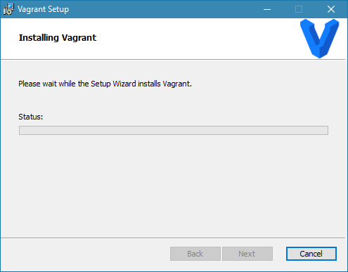

Vagrant : Installation et Configuration
Version des outils
| Os / Tool | Version |
|---|---|
| Windows 10 Professionnel | 1803 |
| Vagrant | 2.1.5 |
Naming convention
| Type | Name | Example |
|---|---|---|
| Base box | operating_system_namecurrent_version | debian10 |
| Vagrant box | ff7_city_name-base_box_trigram | midgar-deb |
| Vagrant box Tools | tools-ff7_city_name-base_box_trigram | cicd-midgar-deb |
Procédure d'installation
La procédure d'installation de Vagrant sur Windows 10 se déroule de la façon suivante :
Commencez par exécuter l'installeur vagrant_2.1.5_x86_64.msi.
Dans la fenêtre Welcome to the Vagrant Setup Wizard cliquez sur Next

Dans la fenêtre End User Licence Agreement cochez I accept the terms in License Agreement et cliquez sur Next
Dans la fenêtre Destination Folder laissez par défaut et cliquez sur Next
Dans la fenêtre Ready to install Vagrant cliquez sur Install
Dans la fenêtre Installing Vagrant attendez la fin des opérations et cliquez sur Next

Dans la fenêtre Completed the Vagrant Setup Wizard cliquez sur Finish
Procédure de post-installation
Verifying the Installation :
C:\Users\micha>vagrant
Usage: vagrant [options] <command> [<args>]
-v, --version Print the version and exit.
-h, --help Print this help.
[...]
Cheat Sheet
Vagrant Basics
| Commands | Description |
|---|---|
| box | This is the command used to manage (add, remove, etc.) boxes. |
| init | This initializes the current directory to be a Vagrant environment by creating an initial Vagrantfile if one does not already exist. |
| up | This command creates and configures guest machines according to your Vagrantfile. |
| halt | This command shuts down the running machine Vagrant is managing. |
| destroy | This command stops the running machine Vagrant is managing and destroys all resources that were created during the machine creation process. |
| suspend | This suspends the guest machine Vagrant is managing, rather than fully shutting it down or destroying it. |
| resume | This resumes a Vagrant managed machine that was previously suspended, perhaps with the suspend command. |
| reload | The equivalent of running a halt followed by an up. |
| status | This will tell you the state of the machines Vagrant is managing. |
| snapshot | This is the command used to manage snapshots with the guest machine. |
Vagrant Essential
| Commands | Description |
|---|---|
| SSH | This will SSH into a running Vagrant machine and give you access to a shell. |
| port | The port command displays the full list of guest ports mapped to the host machine ports. |
| provision | Runs any configured provisioners against the running Vagrant managed machine. |
| package | This packages a currently running VirtualBox or Hyper-V environment into a re-usable box. |
| global-status | This command will tell you the state of all active Vagrant environments on the system for the currently logged in user. |
| validate | This command validates your Vagrantfile. |
| ssh-config | This will output valid configuration for an SSH config file to SSH into the running Vagrant machine from SSH directly (instead of using vagrant SSH). |
| version | This command tells you the version of Vagrant you have installed as well as the latest version of Vagrant that is currently available. |
Vagrant Advanced
| Commands | Description |
|---|---|
| connect | The connect command complements the share command by enabling access to shared environments. |
| login | The login command is used to authenticate with the HashiCorp's Vagrant Cloud server. |
| plugin | This is the command used to manage plugins. |
| powershell | This will open a PowerShell prompt on the host into a running Vagrant guest machine. |
| rdp | This will start an RDP client for a remote desktop session with the guest. |
| share | The share command initializes a Vagrant Share session, allowing you to share your Vagrant environment with anyone in the world. |
Tutoriels Vagrant
Vagrant : Getting Started
Introduction
Vagrant is a tool for building and managing virtual machine environments in a single workflow. With an easy-to-use workflow and focus on automation, Vagrant lowers development environment setup time, increases production parity, and makes the "works on my machine" excuse a relic of the past.
Vagrant vs. Other Software
Command-line tools :
Virtualization software like VirtualBox and VMware come with command-line utilities for managing the lifecycle of machines on their platform. Many people make use of these utilities to write their own automation. Vagrant actually uses many of these utilities internally.
Docker :
Vagrant is a tool focused on providing a consistent development environment workflow across multiple operating systems. Docker is a container management that can consistently run software as long as a containerization system exists.
Terraform :
Vagrant and Terraform are both projects from HashiCorp. Vagrant is a tool focused for managing development environments and Terraform is a tool for building infrastructure.
Quickly start and try
After running the above two commands, you will have a fully running virtual machine in VirtualBox running Ubuntu 12.04 LTS 64-bit. You can SSH into this machine with vagrant ssh, and when you are done playing around, you can terminate the virtual machine with vagrant destroy.
Project Setup
The first step in configuring any Vagrant project is to create a Vagrantfile. The purpose of the Vagrantfile is twofold:
-
Mark the root directory of your project. Many of the configuration options in Vagrant are relative to this root directory.
-
Describe the kind of machine and resources you need to run your project, as well as what software to install and how you want to access it.
Boxes
Boxes are added to Vagrant with vagrant box add. This stores the box under a specific name so that multiple Vagrant environments can re-use it. If you have not added a box yet, you can do so now:
Using a Box :
Vagrant.configure("2") do |config|
config.vm.box = "hashicorp/precise64"
end
Vagrant.configure("2") do |config|
config.vm.box = "hashicorp/precise64"
config.vm.box_version = "1.1.0"
end
Vagrant.configure("2") do |config|
config.vm.box = "hashicorp/precise64"
config.vm.box_url = "https://vagrantcloud.com/hashicorp/precise64"
end
Up And SSH
Boot vagrant Box :
SSH connection :
Synced Folders
By default, Vagrant shares your project directory (remember, that is the one with the Vagrantfile) to the /vagrant directory in your guest machine.
Provisioning
Vagrant has built-in support for automated provisioning. Using this feature, Vagrant will automatically install software when you vagrant up so that the guest machine can be repeatably created and ready-to-use.
Vagrant.configure("2") do |config|
config.vm.box = "hashicorp/precise64"
config.vm.provision :shell, path: "bootstrap.sh"
end
To force provisioning :
Networking Port Forwarding
Vagrant.configure("2") do |config|
config.vm.box = "hashicorp/precise64"
config.vm.provision :shell, path: "bootstrap.sh"
config.vm.network :forwarded_port, guest: 80, host: 4567
end
Share
Vagrant Share lets you share your Vagrant environment to anyone around the world with an internet connection. It will give you a URL that will route directly to your Vagrant environment from any device in the world that is connected to the internet.
vagrant share
...
==> default: Creating Vagrant Share session...
==> default: HTTP URL: http://b1fb1f3f.ngrok.io
...
Teardown
Suspending the virtual machine by calling vagrant suspend will save the current running state of the machine and stop it. Internet.
Halting the virtual machine by calling vagrant halt will gracefully shut down the guest operating system and power down the guest machine
Destroying the virtual machine by calling vagrant destroy will remove all traces of the guest machine from your system. It'll stop the guest machine, power it down, and remove all of the guest hard disks.
Rebuild
Simply :
Vagrant Base Box Creation
Update Base Box :
Connect to base box as root.
Mount last virtualbox guest additions cd.
Eject the disc tray.
Then update it :
Base Box : Centos
Download latest CentOS release. Create a virtualbox machine :
- Name : ctsvanilla
- Memory : 1024
- Cpu : 2
- Système de pointage : Souris PS/2
- Ordre d'amorçage : Optique, Disque Dur
- Acceleration : VT-x/AMD-V, Pagination Imbriquée, PAE/NX, Paravirtualisation KVM
- Mémoire vidéo : 16 Mo
- Contrôleur graphique : VBoxVGA
- Son : Désactivé
- Usb : Désactivé
As root user
# Install yum priorities and epel repo
yum install yum-plugin-priorities
yum --enablerepo=extras install epel-release
# Password-less sudo
visudo # vagrant ALL=(ALL) NOPASSWD: ALL
# SSHH Tweaks
vi /etc/ssh/sshd_config #UseDNS no
# Install packages for virtualbox guest additions
yum upgrade
yum groupinstall "Development Tools"
yum install kernel-devel
yum install dkms wget
# Mount last virtualbox guest additions cd.
mount /dev/cdrom /mnt
sh /mnt/VBoxLinuxAdditions.run
# Umount and dont forget to remove tray then poweroff
umount /mnt
poweroff
# Reconnect and purge history
cat /dev/null > .bash_history && history -c
# Poweroff via vbox
As vagrant user
# To correctly generate .ssh folder
ssh-keygen
# Grab the ssh insecure key
wget https://raw.githubusercontent.com/hashicorp/vagrant/master/keys/vagrant.pub -O ~/.ssh/authorized_keys
# Edit permissions
chmod 600 ~/.ssh/authorized_keys && rm ~/.ssh/id_rsa*
# Purge history
cat /dev/null > .bash_history && history -c
# Poweroff via vbox
Base Box : Ubuntu
Download latest Ubuntu release. Create a virtualbox machine :
- Name : ubtvanilla
- Memory : 1024
- Cpu : 2
- Système de pointage : Souris PS/2
- Ordre d'amorçage : Optique, Disque Dur
- Acceleration : VT-x/AMD-V, Pagination Imbriquée, PAE/NX, Paravirtualisation KVM
- Mémoire vidéo : 16 Mo
- Contrôleur graphique : VBoxVGA
- Son : Désactivé
- Usb : Désactivé
As root user
# Update alternative to have vim instead of nano
update-alternatives --config editor
# Password-less sudo
visudo # vagrant ALL=(ALL) NOPASSWD:ALL at the enf of file
# SSH Tweaks
vi /etc/ssh/sshd_config #UseDNS no
# Install packages for virtualbox guest additions
sudo apt install linux-headers-$(uname -r) build-essential dkms
# Reboot
reboot
# Mount last virtualbox guest additions cd.
mount /dev/cdrom /mnt
sh /mnt/VBoxLinuxAdditions.run
# Umount and dont forget to remove tray then poweroff
umount /mnt
poweroff
# Reconnect and purge history
cat /dev/null > .bash_history && history -c
# Poweroff via vbox
As vagrant user
# To correctly generate .ssh folder
ssh-keygen
# Grab the ssh insecure key
wget https://raw.githubusercontent.com/hashicorp/vagrant/master/keys/vagrant.pub -O ~/.ssh/authorized_keys
# Edit permissions
chmod 600 ~/.ssh/authorized_keys && rm ~/.ssh/id_rsa*
# Purge history
cat /dev/null > .bash_history && history -c
#Poweroff via vbox
Base Box : Mint
Download latest Linux Mint release. Create a virtualbox machine :
- Name : mntvanilla
- Memory : 2048
- Cpu : 2
- Système de pointage : Souris PS/2
- Ordre d'amorçage : Optique, Disque Dur
- Acceleration : VT-x/AMD-V, Pagination Imbriquée, PAE/NX, Paravirtualisation KVM
- Mémoire vidéo : 64 Mo
- Contrôleur graphique : VBoxVGA
- Accélération : 3D
- Son : Désactivé
- Usb : Désactivé
As root user
# Update alternative to have vim instead of nano
update-alternatives --config editor
# Password-less sudo
visudo # vagrant ALL=(ALL) NOPASSWD:ALL at the enf of file
# SSH Tweaks
vi /etc/ssh/sshd_config #UseDNS no
# Install packages for virtualbox guest additions
apt update && apt upgrade
apt install linux-headers-$(uname -r) build-essential dkms openssh-server
# Reboot
reboot
# Mount last virtualbox guest additions cd.
mount /dev/cdrom /mnt
sh /mnt/VBoxLinuxAdditions.run
# Umount and dont forget to remove tray then poweroff
umount /mnt
poweroff
# Reconnect and purge history
cat /dev/null > .bash_history && history -c
# Poweroff via vbox
As vagrant user
# To correctly generate .ssh folder
ssh-keygen
# Grab the ssh insecure key
wget https://raw.githubusercontent.com/hashicorp/vagrant/master/keys/vagrant.pub -O ~/.ssh/authorized_keys
# Edit permissions
chmod 600 ~/.ssh/authorized_keys && rm ~/.ssh/id_rsa*
# Purge history
cat /dev/null > .bash_history && history -c
#Poweroff via vbox
Vagrant Provisioners
Provisioners can also be named :
Vagrant.configure("2") do |config|
# ... other configuration
config.vm.provision "bootstrap", type: "shell" do |s|
s.inline = "echo hello"
end
end
Running Provisioners :
Provisioners are run in three cases: the initial vagrant up, vagrant provision, and vagrant reload --provision.
The --provision-with flag can be used if you only want to run a specific provisioner if you have multiple provisioners specified. The arguments to --provision-with can be the provisioner type (such as "shell") or the provisioner name (such as "bootstrap" from above).
Run Once, Always or Never :
Vagrant.configure("2") do |config|
config.vm.provision "bootstrap", type: "shell", run: "never" do |s|
s.inline = "echo hello"
end
end